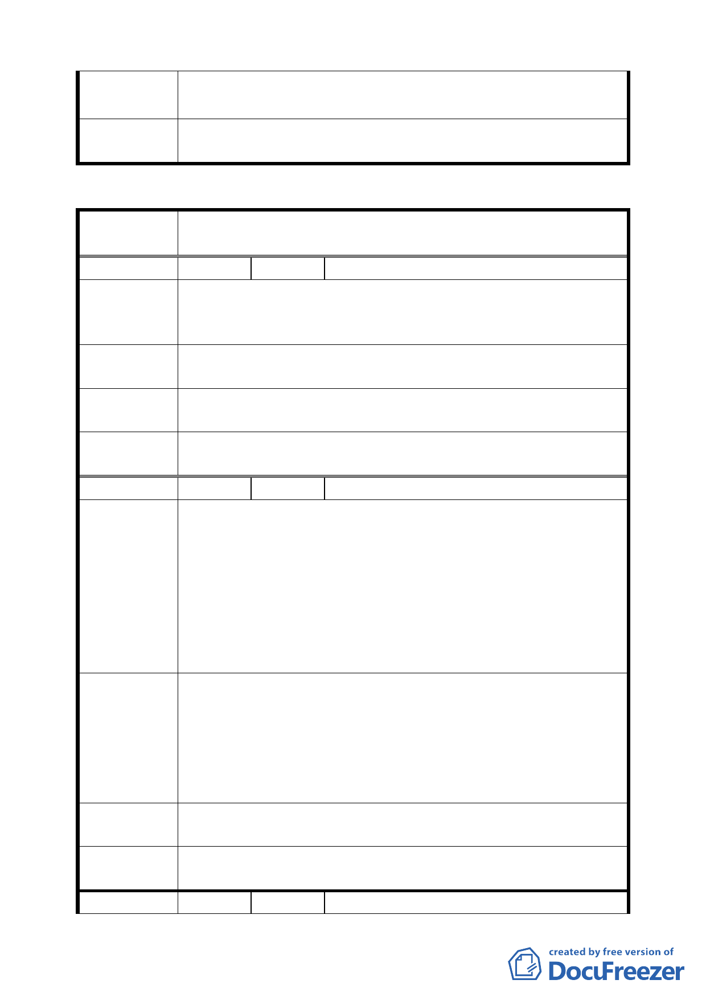

專 案 小 組 94.5.26 專案小組第十三次審查會議：陳情內容不符合住宅區
結 論 檢討變更為商業區原則，建議維持為原計畫之住宅區。
委員會議
決議
同意依專案小組審查結論辦理。
臺北市都市計畫委員會公民或團體陳所提意見綜理表
案
名
臺北市北投區都市計畫通盤檢討（細部計畫）案-----------
石牌生活圈
編 號1
陳情人 陳戌政、裕民里里長謝延龍
建議位置：北投區懷德街 14 巷
陳 情 理 由 建議理由：本來有一塊公家用地作為興建警察宿舍用地，經
鄰附近居民反應已停止建造之計畫。
將本屬於警察局之土地（打算建警察宿舍之土地）改為綠地、
建 議 辦 法 可以種樹木。
專 案 小 組 93.12.19 專案小組第九次審查會議：考慮公園公共開放性不
結 論 足，建議不予變更，維持為住宅區。
委 員 會 議 同意依專案小組審查結論辦理。
決議
編 號2
陳情人 郭尚中
建 議 位 置：北投區文林段一小段 82 地號（北投區文林北
路 7 弄 94 巷 11 號）
建 議 理 由：
一、本區屋齡為 57 年，加強磚造之連棟式 2F 透天住宅土地
陳情理由
面積約 713 坪，由 40 戶分別持有每戶約 22.3 坪。
二、由個人重建，依建蔽率 60﹪計算，土地面積指剩 13.3
坪。依符居住維持原有格局整修停車、積水、綠地空間
無法改善。
一、本區有國小、國中、高中、大學等完整學制，又有家樂
福、捷運、公車等完整生活基能，可發展為高水準之居
住地區應提高建築容積。
建 議 辦 法 二、依都市重建及更新條例，市民大道更新模式提高容積率
輔導居民作整體開發利用。
三、政府輔導以 BOT 方式開發。
專 案 小 組 93.12.19 專案小組第九次審查會議：建議以都市更新方式處
結 論 理。
委 員 會 議 同意依專案小組審查結論辦理。
決議
編
號3
陳情人 張金水
第 三三 頁，共 49 頁